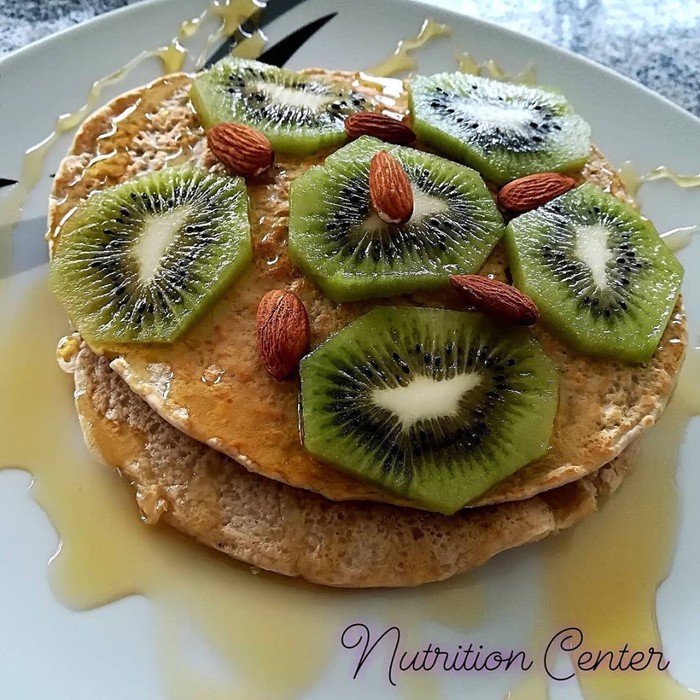

Tips, Recetas y Más

Si sudo mas, Bajo de Peso?
Estamos listos, hemos decidido bajar medidas y la idea es hacerlo pronto. Así que, vamos a recurrir a métodos "infalibles": la faja de neopreno para sudar y el traje plastificado para salir a correr. Y así arrancamos, esperando sudar a mares para "quemar grasa" lo más pronto posible. ¿Esta historia te suena conocida? ¿Conoces a alguien así?
Leer MásSi dejo de comer, bajo de Peso?
Seamos honestos, cuántas veces ha cruzado esa idea por nuestra cabeza. Y es que ese es uno de los grandes mitos que existen en la actualidad. Muchos hombres y mujeres, péro especialmente mujeres, creemos que con el ayuno prologado o no cenar vamos a bajar de peso pero es todo lo contrario.
Leer Más